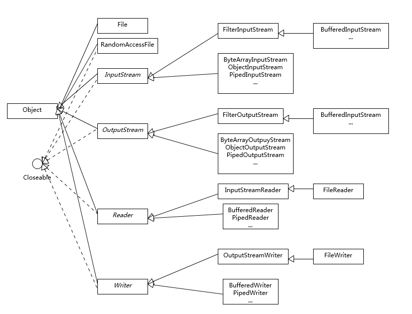

- 00 开篇词 以面试题为切入点，有效提升你的Java内功-极客时间.md
- 01 谈谈你对Java平台的理解？.md
- 02 Exception和Error有什么区别？-极客时间.md
- 03 谈谈final、finally、 finalize有什么不同？-极客时间.md
- 04 强引用、软引用、弱引用、幻象引用有什么区别？-极客时间.md
- 05 String、StringBuffer、StringBuilder有什么区别？-极客时间.md
- 06 动态代理是基于什么原理？-极客时间.md
- 07 int和Integer有什么区别？-极客时间.md
- 08 对比Vector、ArrayList、LinkedList有何区别？-极客时间.md
- 09 对比Hashtable、HashMap、TreeMap有什么不同？-极客时间.md
- 10 如何保证集合是线程安全的 ConcurrentHashMap如何实现高效地线程安全？-极客时间.md
- 11 Java提供了哪些IO方式？ NIO如何实现多路复用？-极客时间.md
- 12 Java有几种文件拷贝方式？哪一种最高效？-极客时间.md
- 13 谈谈接口和抽象类有什么区别？-极客时间.md
- 14 谈谈你知道的设计模式？-极客时间.md
- 15 synchronized和ReentrantLock有什么区别呢？-极客时间.md
- 16 synchronized底层如何实现？什么是锁的升级、降级？-极客时间.md
- 17 一个线程两次调用start()方法会出现什么情况？-极客时间.md
- 18 什么情况下Java程序会产生死锁？如何定位、修复？-极客时间.md
- 19 Java并发包提供了哪些并发工具类？-极客时间.md
- 20 并发包中的ConcurrentLinkedQueue和LinkedBlockingQueue有什么区别？-极客时间.md
- 21 Java并发类库提供的线程池有哪几种？ 分别有什么特点？-极客时间.md
- 22 AtomicInteger底层实现原理是什么？如何在自己的产品代码中应用CAS操作？-极客时间.md
- 23 请介绍类加载过程，什么是双亲委派模型？-极客时间.md
- 24 有哪些方法可以在运行时动态生成一个Java类？-极客时间.md
- 25 谈谈JVM内存区域的划分，哪些区域可能发生OutOfMemoryError-极客时间.md
- 26 如何监控和诊断JVM堆内和堆外内存使用？-极客时间.md
- 27 Java常见的垃圾收集器有哪些？-极客时间.md
- 28 谈谈你的GC调优思路-极客时间.md
- 29 Java内存模型中的happen-before是什么？-极客时间.md
- 30 Java程序运行在Docker等容器环境有哪些新问题？-极客时间.md
- 31 你了解Java应用开发中的注入攻击吗？-极客时间.md
- 32 如何写出安全的Java代码？-极客时间.md
- 33 后台服务出现明显“变慢”，谈谈你的诊断思路？-极客时间.md
- 34 有人说“Lambda能让Java程序慢30倍”，你怎么看？-极客时间.md
- 35 JVM优化Java代码时都做了什么？-极客时间.md
- 36 谈谈MySQL支持的事务隔离级别，以及悲观锁和乐观锁的原理和应用场景？-极客时间.md
- 37 谈谈Spring Bean的生命周期和作用域？-极客时间.md
- 38 对比Java标准NIO类库，你知道Netty是如何实现更高性能的吗？-极客时间.md
- 39 谈谈常用的分布式ID的设计方案？Snowflake是否受冬令时切换影响？-极客时间.md
- 周末福利 一份Java工程师必读书单-极客时间.md
- 周末福利 谈谈我对Java学习和面试的看法-极客时间.md
- 结束语 技术没有终点-极客时间.md
11 Java提供了哪些IO方式？ NIO如何实现多路复用？-极客时间
IO 一直是软件开发中的核心部分之一，伴随着海量数据增长和分布式系统的发展，IO 扩展能力愈发重要。幸运的是，Java 平台 IO 机制经过不断完善，虽然在某些方面仍有不足，但已经在实践中证明了其构建高扩展性应用的能力。
今天我要问你的问题是，Java 提供了哪些 IO 方式？ NIO 如何实现多路复用？
典型回答
Java IO 方式有很多种，基于不同的 IO 抽象模型和交互方式，可以进行简单区分。
第一，传统的 java.io 包，它基于流模型实现，提供了我们最熟知的一些 IO 功能，比如 File 抽象、输入输出流等。交互方式是同步、阻塞的方式，也就是说，在读取输入流或者写入输出流时，在读、写动作完成之前，线程会一直阻塞在那里，它们之间的调用是可靠的线性顺序。
java.io 包的好处是代码比较简单、直观，缺点则是 IO 效率和扩展性存在局限性，容易成为应用性能的瓶颈。
很多时候，人们也把 java.net 下面提供的部分网络 API，比如 Socket、ServerSocket、HttpURLConnection 也归类到同步阻塞 IO 类库，因为网络通信同样是 IO 行为。
第二，在 Java 1.4 中引入了 NIO 框架（java.nio 包），提供了 Channel、Selector、Buffer 等新的抽象，可以构建多路复用的、同步非阻塞 IO 程序，同时提供了更接近操作系统底层的高性能数据操作方式。
第三，在 Java 7 中，NIO 有了进一步的改进，也就是 NIO 2，引入了异步非阻塞 IO 方式，也有很多人叫它 AIO（Asynchronous IO）。异步 IO 操作基于事件和回调机制，可以简单理解为，应用操作直接返回，而不会阻塞在那里，当后台处理完成，操作系统会通知相应线程进行后续工作。
考点分析
我上面列出的回答是基于一种常见分类方式，即所谓的 BIO、NIO、NIO 2（AIO）。
在实际面试中，从传统 IO 到 NIO、NIO 2，其中有很多地方可以扩展开来，考察点涉及方方面面，比如：
- 基础 API 功能与设计， InputStream/OutputStream 和 Reader/Writer 的关系和区别。
- NIO、NIO 2 的基本组成。
- 给定场景，分别用不同模型实现，分析 BIO、NIO 等模式的设计和实现原理。
- NIO 提供的高性能数据操作方式是基于什么原理，如何使用？
- 或者，从开发者的角度来看，你觉得 NIO 自身实现存在哪些问题？有什么改进的想法吗？
IO 的内容比较多，专栏一讲很难能够说清楚。IO 不仅仅是多路复用，NIO 2 也不仅仅是异步 IO，尤其是数据操作部分，会在专栏下一讲详细分析。
知识扩展
首先，需要澄清一些基本概念：
- 区分同步或异步（synchronous/asynchronous）。简单来说，同步是一种可靠的有序运行机制，当我们进行同步操作时，后续的任务是等待当前调用返回，才会进行下一步；而异步则相反，其他任务不需要等待当前调用返回，通常依靠事件、回调等机制来实现任务间次序关系。
- 区分阻塞与非阻塞（blocking/non-blocking）。在进行阻塞操作时，当前线程会处于阻塞状态，无法从事其他任务，只有当条件就绪才能继续，比如 ServerSocket 新连接建立完毕，或数据读取、写入操作完成；而非阻塞则是不管 IO 操作是否结束，直接返回，相应操作在后台继续处理。
不能一概而论认为同步或阻塞就是低效，具体还要看应用和系统特征。
对于 java.io，我们都非常熟悉，我这里就从总体上进行一下总结，如果需要学习更加具体的操作，你可以通过教程等途径完成。总体上，我认为你至少需要理解一下内容。
- IO 不仅仅是对文件的操作，网络编程中，比如 Socket 通信，都是典型的 IO 操作目标。
- 输入流、输出流（InputStream/OutputStream）是用于读取或写入字节的，例如操作图片文件。
- 而 Reader/Writer 则是用于操作字符，增加了字符编解码等功能，适用于类似从文件中读取或者写入文本信息。本质上计算机操作的都是字节，不管是网络通信还是文件读取，Reader/Writer 相当于构建了应用逻辑和原始数据之间的桥梁。
- BufferedOutputStream 等带缓冲区的实现，可以避免频繁的磁盘读写，进而提高 IO 处理效率。这种设计利用了缓冲区，将批量数据进行一次操作，但在使用中千万别忘了 flush。
- 参考下面这张类图，很多 IO 工具类都实现了 Closeable 接口，因为需要进行资源的释放。比如，打开 FileInputStream，它就会获取相应的文件描述符（FileDescriptor），需要利用 try-with-resources、 try-finally 等机制保证 FileInputStream 被明确关闭，进而相应文件描述符也会失效，否则将导致资源无法被释放。利用专栏前面的内容提到的 Cleaner 或 finalize 机制作为资源释放的最后把关，也是必要的。
下面是我整理的一个简化版的类图，阐述了日常开发应用较多的类型和结构关系。

- Java NIO 概览
首先，熟悉一下 NIO 的主要组成部分：
-
Buffer，高效的数据容器，除了布尔类型，所有原始数据类型都有相应的 Buffer 实现。
-
Channel，类似在 Linux 之类操作系统上看到的文件描述符，是 NIO 中被用来支持批量式 IO 操作的一种抽象。
File 或者 Socket，通常被认为是比较高层次的抽象，而 Channel 则是更加操作系统底层的一种抽象，这也使得 NIO 得以充分利用现代操作系统底层机制，获得特定场景的性能优化，例如，DMA（Direct Memory Access）等。不同层次的抽象是相互关联的，我们可以通过 Socket 获取 Channel，反之亦然。
-
Selector，是 NIO 实现多路复用的基础，它提供了一种高效的机制，可以检测到注册在 Selector 上的多个 Channel 中，是否有 Channel 处于就绪状态，进而实现了单线程对多 Channel 的高效管理。Selector 同样是基于底层操作系统机制，不同模式、不同版本都存在区别，例如，在最新的代码库里，相关实现如下：
-
Charset，提供 Unicode 字符串定义，NIO 也提供了相应的编解码器等，例如，通过下面的方式进行字符串到 ByteBuffer 的转换：
Charset.defaultCharset().encode("Hello world!"));
- NIO 能解决什么问题？
下面我通过一个典型场景，来分析为什么需要 NIO，为什么需要多路复用。设想，我们需要实现一个服务器应用，只简单要求能够同时服务多个客户端请求即可。
使用 java.io 和 java.net 中的同步、阻塞式 API，可以简单实现。
public class DemoServer extends Thread {
private ServerSocket serverSocket;
public int getPort() {
return serverSocket.getLocalPort();
}
public void run() {
try {
serverSocket = new ServerSocket(0);
while (true) {
Socket socket = serverSocket.accept();
RequestHandler requestHandler = new RequestHandler(socket);
requestHandler.start();
}
} catch (IOException e) {
e.printStackTrace();
} finally {
if (serverSocket != null) {
try {
serverSocket.close();
} catch (IOException e) {
e.printStackTrace();
}
;
}
}
}
public static void main(String[] args) throws IOException {
DemoServer server = new DemoServer();
server.start();
try (Socket client = new Socket(InetAddress.getLocalHost(), server.getPort())) {
BufferedReader bufferedReader = new BufferedReader(new InputStreamReader(client.getInputStream()));
bufferedReader.lines().forEach(s -> System.out.println(s));
}
}
}
// 简化实现，不做读取，直接发送字符串
class RequestHandler extends Thread {
private Socket socket;
RequestHandler(Socket socket) {
this.socket = socket;
}
@Override
public void run() {
try (PrintWriter out = new PrintWriter(socket.getOutputStream());) {
out.println("Hello world!");
out.flush();
} catch (Exception e) {
e.printStackTrace();
}
}
}
其实现要点是：
- 服务器端启动 ServerSocket，端口 0 表示自动绑定一个空闲端口。
- 调用 accept 方法，阻塞等待客户端连接。
- 利用 Socket 模拟了一个简单的客户端，只进行连接、读取、打印。
- 当连接建立后，启动一个单独线程负责回复客户端请求。
这样，一个简单的 Socket 服务器就被实现出来了。
思考一下，这个解决方案在扩展性方面，可能存在什么潜在问题呢？
大家知道 Java 语言目前的线程实现是比较重量级的，启动或者销毁一个线程是有明显开销的，每个线程都有单独的线程栈等结构，需要占用非常明显的内存，所以，每一个 Client 启动一个线程似乎都有些浪费。
那么，稍微修正一下这个问题，我们引入线程池机制来避免浪费。
serverSocket = new ServerSocket(0);
executor = Executors.newFixedThreadPool(8);
while (true) {
Socket socket = serverSocket.accept();
RequestHandler requestHandler = new RequestHandler(socket);
executor.execute(requestHandler);
}
这样做似乎好了很多，通过一个固定大小的线程池，来负责管理工作线程，避免频繁创建、销毁线程的开销，这是我们构建并发服务的典型方式。这种工作方式，可以参考下图来理解。
如果连接数并不是非常多，只有最多几百个连接的普通应用，这种模式往往可以工作的很好。但是，如果连接数量急剧上升，这种实现方式就无法很好地工作了，因为线程上下文切换开销会在高并发时变得很明显，这是同步阻塞方式的低扩展性劣势。
NIO 引入的多路复用机制，提供了另外一种思路，请参考我下面提供的新的版本。
public class NIOServer extends Thread {
public void run() {
try (Selector selector = Selector.open();
ServerSocketChannel serverSocket = ServerSocketChannel.open();) {// 创建Selector和Channel
serverSocket.bind(new InetSocketAddress(InetAddress.getLocalHost(), 8888));
serverSocket.configureBlocking(false);
// 注册到Selector，并说明关注点
serverSocket.register(selector, SelectionKey.OP_ACCEPT);
while (true) {
selector.select();// 阻塞等待就绪的Channel，这是关键点之一
Set<SelectionKey> selectedKeys = selector.selectedKeys();
Iterator<SelectionKey> iter = selectedKeys.iterator();
while (iter.hasNext()) {
SelectionKey key = iter.next();
// 生产系统中一般会额外进行就绪状态检查
sayHelloWorld((ServerSocketChannel) key.channel());
iter.remove();
}
}
} catch (IOException e) {
e.printStackTrace();
}
}
private void sayHelloWorld(ServerSocketChannel server) throws IOException {
try (SocketChannel client = server.accept();) { client.write(Charset.defaultCharset().encode("Hello world!"));
}
}
// 省略了与前面类似的main
}
这个非常精简的样例掀开了 NIO 多路复用的面纱，我们可以分析下主要步骤和元素：
-
首先，通过 Selector.open() 创建一个 Selector，作为类似调度员的角色。
-
然后，创建一个 ServerSocketChannel，并且向 Selector 注册，通过指定 SelectionKey.OP_ACCEPT，告诉调度员，它关注的是新的连接请求。
注意，为什么我们要明确配置非阻塞模式呢？这是因为阻塞模式下，注册操作是不允许的，会抛出 IllegalBlockingModeException 异常。
-
Selector 阻塞在 select 操作，当有 Channel 发生接入请求，就会被唤醒。
-
在 sayHelloWorld 方法中，通过 SocketChannel 和 Buffer 进行数据操作，在本例中是发送了一段字符串。
可以看到，在前面两个样例中，IO 都是同步阻塞模式，所以需要多线程以实现多任务处理。而 NIO 则是利用了单线程轮询事件的机制，通过高效地定位就绪的 Channel，来决定做什么，仅仅 select 阶段是阻塞的，可以有效避免大量客户端连接时，频繁线程切换带来的问题，应用的扩展能力有了非常大的提高。下面这张图对这种实现思路进行了形象地说明。
在 Java 7 引入的 NIO 2 中，又增添了一种额外的异步 IO 模式，利用事件和回调，处理 Accept、Read 等操作。 AIO 实现看起来是类似这样子：
AsynchronousServerSocketChannel serverSock = AsynchronousServerSocketChannel.open().bind(sockAddr);
serverSock.accept(serverSock, new CompletionHandler<>() { //为异步操作指定CompletionHandler回调函数
@Override
public void completed(AsynchronousSocketChannel sockChannel, AsynchronousServerSocketChannel serverSock) {
serverSock.accept(serverSock, this);
// 另外一个 write（sock，CompletionHandler{}）
sayHelloWorld(sockChannel, Charset.defaultCharset().encode
("Hello World!"));
}
// 省略其他路径处理方法...
});
鉴于其编程要素（如 Future、CompletionHandler 等），我们还没有进行准备工作，为避免理解困难，我会在专栏后面相关概念补充后的再进行介绍，尤其是 Reactor、Proactor 模式等方面将在 Netty 主题一起分析，这里我先进行概念性的对比：
- 基本抽象很相似，AsynchronousServerSocketChannel 对应于上面例子中的 ServerSocketChannel；AsynchronousSocketChannel 则对应 SocketChannel。
- 业务逻辑的关键在于，通过指定 CompletionHandler 回调接口，在 accept/read/write 等关键节点，通过事件机制调用，这是非常不同的一种编程思路。
今天我初步对 Java 提供的 IO 机制进行了介绍，概要地分析了传统同步 IO 和 NIO 的主要组成，并根据典型场景，通过不同的 IO 模式进行了实现与拆解。专栏下一讲，我还将继续分析 Java IO 的主题。
一课一练
关于今天我们讨论的题目你做到心中有数了吗？留一道思考题给你，NIO 多路复用的局限性是什么呢？你遇到过相关的问题吗？
请你在留言区写写你对这个问题的思考，我会选出经过认真思考的留言，送给你一份学习鼓励金，欢迎你与我一起讨论。
你的朋友是不是也在准备面试呢？你可以“请朋友读”，把今天的题目分享给好友，或许你能帮到他。
© 2019 - 2023 Liangliang Lee. Powered by Vert.x and hexo-theme-book.